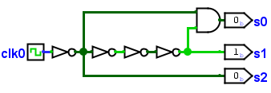
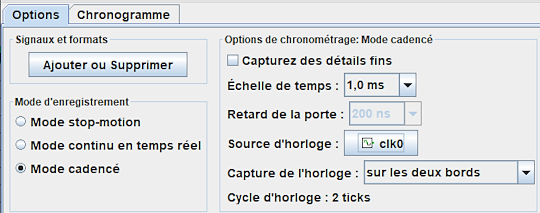
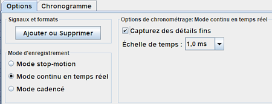
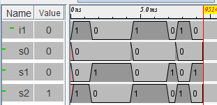

Onglet Option Mode cadencé
Précédent : Onglet Option Mode en continu..

Le circuit ci-dessus sera encore utilisé pour produire les exemples ci-dessous.
Mode en cadencé sans les détails fins :

Les données sont capturées en fonction d'un signal d'horloge précisé par le champ Source d'horloge. Les données sont capturées à chaque transition de l'horloge définis par le champ Capture de l'horloge, le fluctuations qui peuvent se produire entre les transistions ou pendant la propagation sont ignorées. Chaque tic des cycles d'hologes est enregistré comme s'il prenait la valeur du champ Échelle de temps.

Dans l'enregistrement ci-dessus nous avions paramétré une valeur de 1.0ms dans le champ Échelle de temps
Mode en continu / avec les détails fins :

Les données sont capturées en continu, chaque fois que le simulateur est activé. Les fluctuations transitoires du signal sont capturées. Chaque seconde de temps réel est enregistrée comme la valeur du champ Echelle de temps de temps de circuit simulé.

Dans l'enregistrement ci-dessus nous avions paramétré une valeur de 1.0ms dans le champ Echelle de temps ensuite un clic sur l'entrée s1 a modifié celle-ci immédiatement après la réinitialisation de la simulation, puis environs 1,5 seconde plus tard un autre clic, puis 3 secondes plus tard encore un clic. On observe que les secondes réelles ont été enregistrées comme des millisondes de la simulation et que la sortie s0 a été enregistrée avec la transitoire de la porte And.
Suivant : Onglet Options Mode cadencé.